Hands-Free Microphone/Speaker Is Inoperative
Hands-free microphone is inoperative1. Before you begin, run the Components Check described on the first page and verify the problem.
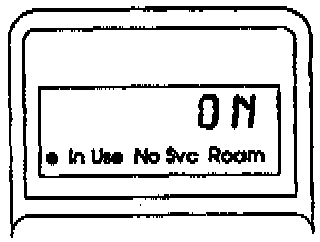
2. Turn the ignition switch to I (Accessory). Then turn the phone on, and verify that it's unlocked. The handset display should read ON and stay ON throughout this test.
3. Remove center armrest (1991-92 models) and rear-center trim panel (1993 and later models) to gain access to the control box. The control box is located under the armrest (91-92) or inside the rear-center trim panel (93 and later). Remove the control box.
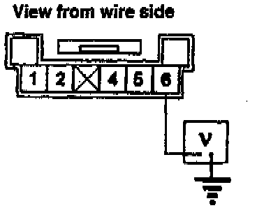
4. Set your DVOM to volts, then backprobe the 6-P connector at the control box. Measure the voltage to ground.
Is there about 9 volts?
Yes - Go to the next step.
No - Go to step 7.
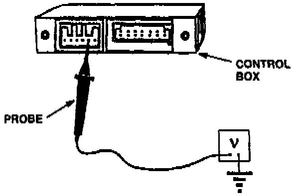
5. Backprobe the 6-P connector from terminal 5 to ground. Measure the voltage to ground.
Is voltage reading less than 0.2?
Yes - Go to the next step.
No - Go to step 7.
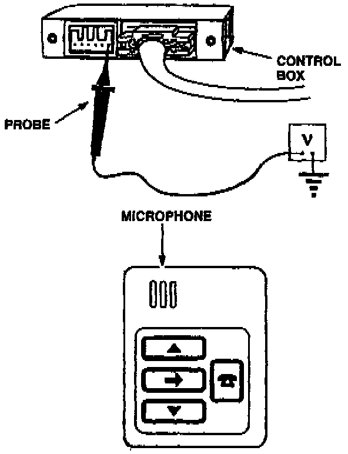
6. Backprobe the control box 6-P connector between terminal 6 and ground while blowing hard into the microphone from about one inch away.
Does the voltage drop when you're blowing into the microphone?
Yes - Replace the transceiver.[ ]
No - Replace the switch module.[ ]
7. Disconnect the 6-P connector at the control box.
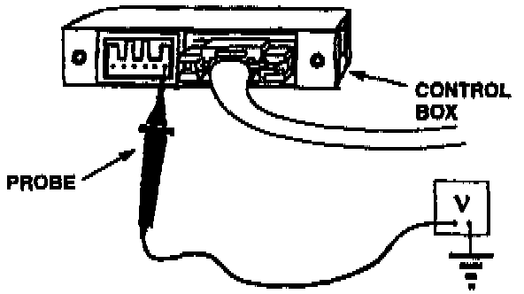
8. Set the DVOM to volts. At the 6-P receptacle on the control box, measure voltage between terminal 6 and ground.
Is there about 9.5 volts?
Yes - Replace the switch module.[ ]
No - Go to the next step.
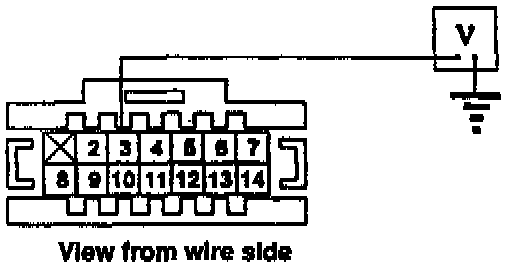
9. Backprobe the 14-P control box connector at terminal 3 and measure voltage to ground.
Is there about 9.5 volts?
Yes - Replace the control box.[ ]
No - Go to the next step.
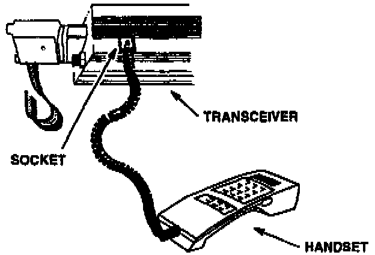
10. Disconnect the 14-P connector from the control box. Disconnect the handset from the console and take it to the trunk. Open the trunk, remove the rubber plug from the socket in the underside of the transceiver, and plug the handset into that socket Then, press the power button on the handset.
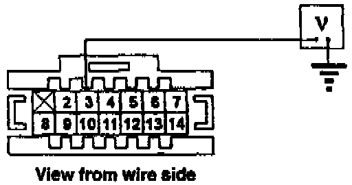
11. At the 14-P connector, check for voltage between terminal 3 and ground.
Is there about 9.5 volts?
Yes - Replace the control box.[ ]
No - Go to the next step.
12. Disconnect the 25-P connector from the transceiver and leave the 14-P connector disconnected from the control box.
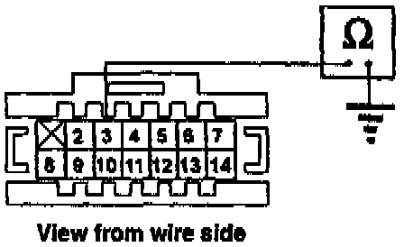
13. Set the DVOM to ohms. At the 14-P connector, check for continuity between terminal 3 and ground.
Is there continuity?
Yes - Repair shorted wire between the 25-P transceiver connector and the 14-P control box connector.[ ]
No - Go to the next step.
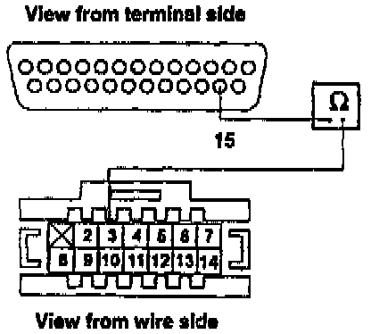
14. Turn the phone off. Check for continuity between terminal 15 of the 25-pin connector and terminal 3 of the 14-P connector using a long test lead.
Is there continuity?
Yes - Replace the transceiver.[ ]
No - Go to the next step.
15. Check the connections at both DIN connectors (one at the control box, one at the transceiver).
Are the DIN connectors OK?
Yes - Repair the open wire between the 25-P transceiver connector and the 14-P control box connector.[ ]
No - Repair the faulty DIN connectors.[ ]
Handsfree speaker is inoperative
1. Before you begin, run the Components Check described on the first page and verify the problem.
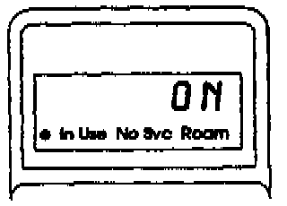
2. Turn the ignition switch to I (Accessory). Then turn the phone on, and verify that it's unlocked. The handset display should read ON and stay ON throughout this test.
3. Verify the speaker problem by pressing keys on the handset and listening for tones. (You should also have heard a tone when you turned the phone on.)
4. With the handset, enter the programming mode of the Number Assignment Module (NAM) by pressing Fcn + 0 + 6 digit security code + repeat the 6-digit security code + Rcl. (Refer to the programming instructions on the last page of this bulletin.)
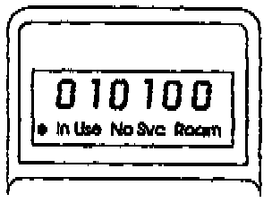
5. Scroll to step 10 by holding down the * key. Does step 10 display "010100?"
Yes - Go to step 7.
No - Enter "010100. Repeatedly press the * key until "01" appears in the display. Then, press the "Snd" key.
6. Press the keys on the handset and listen for the tones. Can you hear the tones through the speaker?
Yes - The hands-free speaker function is OK.[ ]
No - Go to the next step.
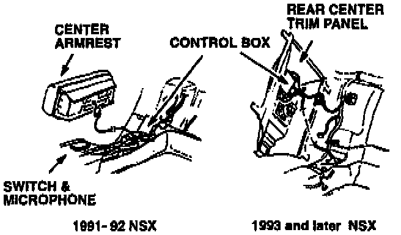
7. Remove the center armrest (1991-92 models) and rear-center trim panel (1993 and later models) to reach the connectors on the control box.
8. Turn on the car radio to verify there is radio sound at the rear speaker.
Is there radio sound at the rear speaker?
Yes - Go to step 13.
No - Go to the next step.
9. Remove the rear speaker from the rear-center trim panel. Keep the speaker connected to its 2-P connector.
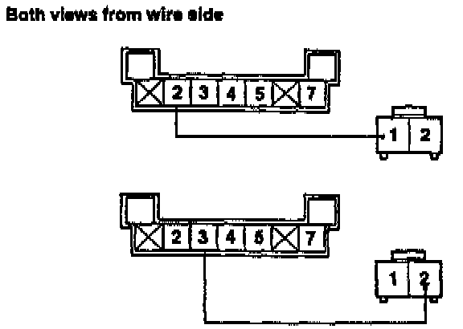
10. Set the DVOM to ohms. Disconnect the 7-P connector from the control box. Check resistance between terminal 2 of the 7-P connector and terminal 1 of the 2-P rear speaker connector. (The 2-P connector is backprobed.) Also, check resistance between terminal 3 of the 7-P connector and terminal 2 of the 2-P rear speaker connector.
Is there continuity between either wire?
Yes - Go to the next step.
No - Repair open in wire(s).[ ]
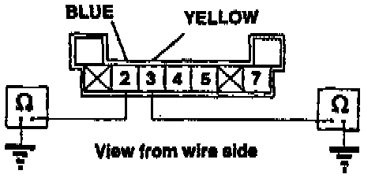
11. At the control box 7-pin connector, check resistance between terminal 2 and ground, and terminal 3 and ground.
Is there continuity?
Yes - Repair short to ground from control box to rear speaker. Go to next step.
No - Replace control box.[ ]
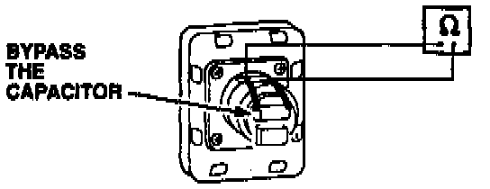
12. Disconnect the 2-P connector from the speaker. Measure resistance between the positive (+) and negative (-) speaker posts, making sure to bypass the speaker's capacitor.
Is there about 4.5 ohms of resistance?
Yes - Replace control box.[ ]
No - Replace rear speaker.[ ]
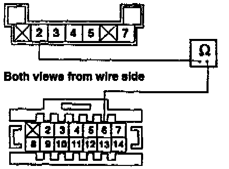
13. Reconnect the 7-P connector to the control box. Then, with the phone on, backprobe to check continuity between terminal 2 of the 7-P connector and terminal 6 of the 14-P connector while pressing any key on the handset.
Is there continuity for about 4 seconds after you release the handset key?
Yes - Go to the next step.
No - Replace the control box.[ ]
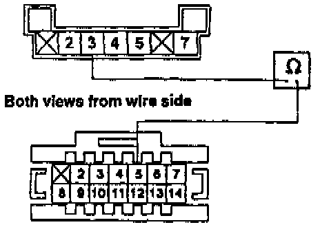
14. With the phone still on, backprobe to check continuity between terminal 3 of the 7-P connector and terminal 5 of the 14-P connector while pressing any key on the handset.
Is there continuity for about 4 seconds after you release the handset key?
Yes - Go to the next step.
No - Replace the control box.[ ]
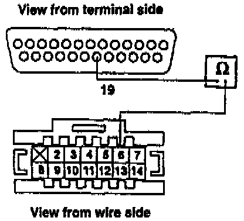
15. Turn the phone off and disconnect the 25-P connector from the transceiver and the 14-P connector from the control box. Check for continuity between terminal 19 of the 25-P connector and terminal 6 of the 14-P connector.
Is there continuity?
Yes - Go to the next step.
No - Repair open in wire between the 25-P transceiver connector and 14-P control box connector. Also, check for proper connections between all DIN connectors.[ ]
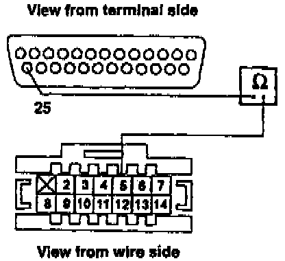
16. Check for continuity between terminal 25 of the 25-P connector and terminal 5 of the 14-P connector.
Is there continuity?
Yes - Go to the next step.
No - Repair open in the wire from the 25-P connector to the 14-P connector. Also, check for proper connections between all DIN connectors.[ ]
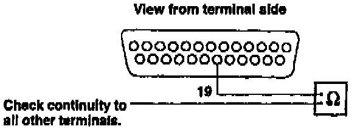
17. Check for continuity between terminal 19 of the 25-P connector and all the other terminals.
Is there continuity?
Yes - Go to the next step.
No - Replace the transceiver.[ ]
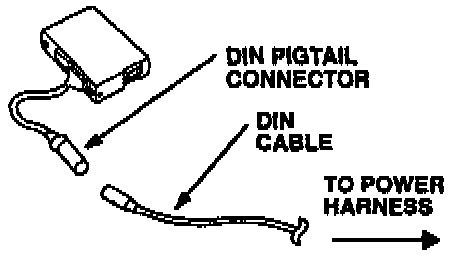
18. Disconnect the control box 13-P DIN pigtail connector from the DIN cable. Repeat step 17.
Is there continuity?
Yes - Go to the next step.
No - Replace the control box and 13-P DIN pigtail harness. (Harness is not available separately.[ ]
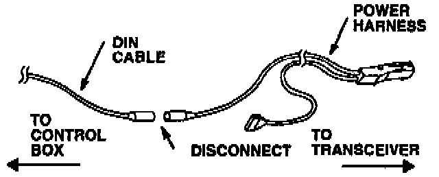
19. Disconnect the other end of the DIN cable (between the DIN cable and power harness DIN connector) and repeat step 17.
Is there continuity?
Yes - Replace the transceiver (power) harness. (Combination DIN cable connector and power wire.[]
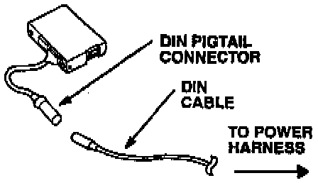
No - Replace the DIN cable (located between the power harness and pigtail harness.[ ]